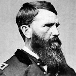

|

|

|
|
|
As a Missouri legislator, a member of the House of
Representatives (1857-1862), a general, a vice presidential
candidate (1868) and a United States Senator (1871-1873),
Francis Preston Blair, Jr. was a key political figure of the
1860s and 1870s and an important opponent of Radical
Reconstruction.
Born in Lexington, Kentucky in 1821, Frank Blair grew up
in a family immersed in politics. Blair's grandfather had
been among Kentucky's earliest political leaders, building a
social and political network that the family maintained for
the next eighty years. In the late 1820s, Blair's father
became an ally of Andrew Jackson, following Jackson to
Washington in 1829. There, Blair's father established the
Washington Globe, the era's leading Democratic Party
newspaper.
After being educated in Washington, D.C., private
schools, Frank Blair went on to college at Princeton and
then to legal studies at Kentucky's Transylvania College.
After completing his education, Blair relocated to Missouri,
established a legal practice, and served in the Mexican War.
After the war, Blair's father successfully lobbied to make
him Attorney General of the New Mexico Territory. Returning
to Missouri, Blair won a seat in the state legislature,
where he served for four years. While Frank Blair was
building his political career, father Francis Blair was
reconsidering his Democratic Party allegiance. The elder
Blair was no abolitionist, but he vehemently opposed
expansion of slavery into the new territories, believing
that the nation should reserve them for white settlers.
After a brief flirtation with the Free Soil Party, Francis
Blair broke decisively with the Democrats over the
Kansas-Nebraska Act and joined the new Republican Party.
Frank and his brother Montgomery followed their father
into the Republican Party. During the Civil War, Montgomery
joined Abraham Lincoln's cabinet as Postmaster General while
Frank served in Congress and in the Union army. Lincoln's
relationship with the Blairs reflected the President's
anxiety about Missouri, Kentucky, and the other border
states. Though these slave states had remained within the
Union, Confederate sympathies ran high in all of them. If
the Union lost any of these states, Lincoln believed, the
nation might well lose the entire war. Lincoln carefully
cultivated his friends in these states, reaching out to
former Democrats like the Blairs.
Frank Blair did a great deal to ensure that Missouri
remained in the Union during the tense months following Fort
Sumter. He joined the Federal army in April of 1861 as a
colonel, and was soon promoted to brigadier general, and
then again to major general. These promotions were given by
Lincoln to reward Blair's loyalty to the administration. In
contrast to most political generals, Blair performed
credibly as a military commander. Ulysses S. Grant and
William T. Sherman both spoke favorably about his abilities
as a general, and he distinguished himself with his service
during the Vicksburg campaign, Battle of Chattanooga, the
Atlanta campaign, and the March to the Sea.
Frank Blair and his family recognized that the
Emancipation Proclamation rang the death knell of slavery
throughout the South. However, they expected that former
slaves would remain subservient to white men. Once the war
ended, Frank Blair, like his father, vigorously opposed the
Radical Republicans, who sought full civil rights for
African-Americans. As former Democrats, the Blairs were
natural allies of the new President, Tennessee Democrat
Andrew Johnson. While many Republicans counseled Johnson to
work with radicals in the party, the Blairs advised him to
build his majority around Democrats in the South, border
state Unionists and conservative Republicans. Johnson's
increasingly heated attacks on Republican radicals
contributed to Republican gains in the 1866 congressional
elections, and the poisoned relationship between the
President and Congress led to Johnson's impeachment and
trial. Most of Lincoln's men turned on Johnson, but the
Blairs joined William Seward and a few others to support the
President. None of them were again welcome in the
Republican Party. Having stood with Johnson, Frank Blair now
returned to the Democratic Party after a ten-year absence.
In 1868, Democrats nominated New York Governor Horatio
Seymour for the presidency and chose Blair as his running
mate. Bitter over Johnson's failure to control
Reconstruction, Blair used his campaign appearances to
revisit the Democratic Party's pre-war boast that it was the
"white man's party". Blair denounced Southern
Reconstruction governments as controlled by "a
semi-barbarous race of blacks who are worshippers of
fetishes and polygamists" and who "subject the white women
to their unbridled lust." Blair's incendiary outbursts
alienated many Northerners and made Blair himself a campaign
issue. "Seymour was opposed to the late war," said
Republican wags, and "Blair is in favor of the next one."
Seymour and Blair were soundly defeated in the election by
Republican Ulysses S. Grant.
Though the country chose Grant, Missouri stuck by Frank
Blair, making him a U.S. Senator. Until his death in 1875,
Blair energetically but unsuccessfully opposed any
concession designed to help African-Americans achieve
economic or political equality. Blair's vision of a "white
man's republic" soon prevailed throughout the South as
Americans retreated from Reconstruction era commitments.
Source: Joan Waugh, ed., Facts on File Encyclopedia of American
History: Civil War and Reconstruction, 1856 to 1869 (New York: Facts on
File, 2003), 30-31.
|